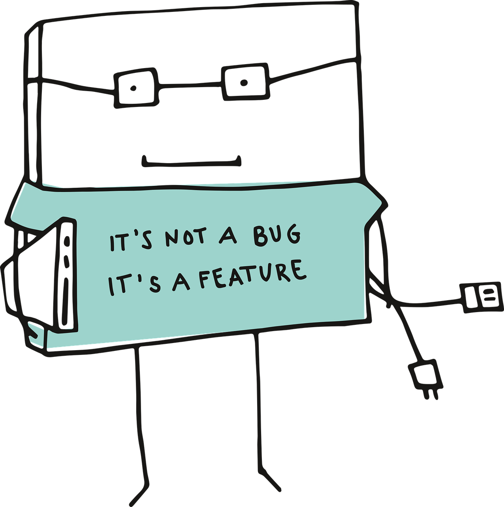

Amenazas, vulnerabilidades y ataques a la ciberseguridad
Las amenazas, las vulnerabilidades y los ataques son el objetivo central de los paladines de ciberseguridad. Una amenaza a la ciberseguridad es la posibilidad de que ocurra un evento nocivo, como un ataque.
Una vulnerabilidad es una debilidad que hace que un objetivo sea susceptible a un ataque. Un ataque es una explotación deliberada de una debilidad detectadas en sistemas de información de la computadora, ya
sea como objetivos específicos o simplemente como objetivos de la oportunidad. Los delincuentes informáticos pueden tener diferentes motivaciones para seleccionar un objetivo de un ataque. Los delincuentes
cibernéticos tienen éxito al buscar e identificar continuamente los sistemas con vulnerabilidades evidentes. Las víctimas comunes incluyen sistemas sin parches o sistemas que no cuentan con detección de virus
y de correo no deseado.
En este capítulo se examinan los ataques más comunes a la ciberseguridad. Los hechiceros cibernéticos deben saber cómo funciona cada ataque, lo que aprovecha y cómo afecta a la víctima. El capítulo comienza
explicando la amenaza de malware y de código malicioso, y luego explica los tipos de trucos involucrados en la ingeniería social. Un ataque cibernético es un tipo de maniobra ofensiva utilizada por los delincuentes
cibernéticos para atacar a los sistemas de información de la computadora, las redes informáticas u otros dispositivos de la computadora, mediante un acto malicioso. Los delincuentes cibernéticos lanzan maniobras
ofensivas contra redes cableadas e inalámbricas.
¿Qué es el malware?
El software malicioso, o malware, es un término que se utiliza para describir el software diseñado para interrumpir las operaciones de la computadora u obtener acceso a los sistemas informáticos, sin el conocimiento o el permiso del usuario.
El malware se ha convertido en un término general que se utiliza para describir todo el software hostil o intruso. El término malware incluye virus, gusanos, troyanos, ransomware, spyware, adware, scareware y otros programas maliciosos.
El malware puede ser obvio y simple de identificar o puede ser muy sigiloso y casi imposible de detectar.
Virus, gusanos y troyanos.
Los delincuentes cibernéticos apuntan a los terminales del usuario mediante la instalación de malware.
Virus
Un virus es un código malicioso ejecutable asociado a otro archivo ejecutable, como un programa legítimo. La mayoría de los virus requieren la inicialización del usuario final y pueden activarse en un momento o fecha específica. Los virus informáticos generalmente se propagan en una de tres maneras: desde medios extraíbles; desde descargas de Internet y desde archivos adjuntos de correo electrónico. Los virus pueden ser inofensivos y simplemente mostrar una imagen o pueden ser destructivos, como los que modifican o borran datos. Para evitar la detección, un virus se transforma. El simple acto de abrir un archivo puede activar un virus. Un sector de arranque o un virus del sistema de archivos, infecta las unidades de memoria flash USB y puede propagarse al disco duro del sistema. La ejecución de un programa específico puede activar un virus del programa. Una vez que el virus del programa está activo, infectará generalmente otros programas en la computadora u otras computadoras de la red. El virus Melissa es un ejemplo de virus que se propaga por correo electrónico. Melissa afectó a decenas de miles de usuarios y causó daños por una cifra estimada en USD 1,2 mil millones. Haga clic aquí para leer más sobre los virus.
Gusanos
Los gusanos son códigos maliciosos que se replican al explotar de manera independiente las vulnerabilidades en las redes. Los gusanos, por lo general, ralentizan las redes. Mientras que un virus requiere la ejecución de un programa del host,
los gusanos pueden ejecutarse por sí mismos. A excepción de la infección inicial, los gusanos ya no requieren la participación del usuario. Después de que un gusano afecta a un host, se puede propagar muy rápido en la red.
Los gusanos comparten patrones similares. Todos tienen una vulnerabilidad de activación, una manera de propagarse y contienen una carga útil.
Los gusanos son responsables de algunos de los ataques más devastadores en Internet. Por ejemplo, en 2001, el gusano Code Red infectó a 658 servidores. En 19 horas, el gusano infectó a más de 300 000 servidores.
Troyano
Un troyano es un malware que ejecuta operaciones maliciosas bajo la apariencia de una operación deseada. Este código malicioso ataca los privilegios de usuario que lo ejecutan. Un troyano se diferencia de un virus debido a que el troyano está relacionado con los archivos no ejecutables, como archivos de imagen, de audio o juegos.
Bomba lógica
Una bomba lógica es un programa malicioso que utiliza un activador para reactivar el código malicioso. Por ejemplo, los activadores pueden ser fechas,horas, otros programas en ejecución o la eliminación de una cuenta de usuario. La bomba lógica permanece inactiva hasta que se produce el evento activador. Una vez activada, una bomba lógica implementa un código malicioso que provoca daños en una computadora. Una bomba lógica puede sabotear los registros de bases de datos, borrar los archivos y atacar los sistemas operativos o aplicaciones. Los paladines cibernéticos descubrieron recientemente las bombas lógicas que atacan y destruyen a los componentes de hardware de una estación de trabajo o un servidor, como ventiladores de refrigeración, CPU, memorias, unidades de disco duro y fuentes de alimentación. La bomba lógica abruma estos dispositivos hasta que se sobrecalientan o fallan.
Ransomware
El ransomware mantiene cautivo a un sistema informático o los datos que contiene hasta que el objetivo haga un pago. El ransomware trabaja generalmente encriptando los datos de la computadora con una clave desconocida para el usuario.
El usuario debe pagar un rescate a los delincuentes para eliminar la restricción.
Algunas otras versiones de ransomware pueden aprovechar vulnerabilidades específicas del sistema para bloquearlo. El ransomware se propaga como un troyano y es el resultado de un archivo descargado o de alguna debilidad del software.
El pago a través de un sistema de pago ilocalizable siempre es el objetivo del delincuente. Una vez que la víctima paga, los delincuentes proporcionan un programa que descifra los archivos o envían un código de desbloqueo.
Saber más.
Puertas traseras y rootkits
Una puerta trasera o un rootkit se refiere al programa o al código que genera un delincuente que ha comprometido un sistema. La puerta trasera omite la autenticación normal que se utiliza para tener acceso a un sistema.
Algunos programas comunes de puerta trasera son Netbus y Back Orifice, que permiten el acceso remoto a los usuarios no autorizados del sistema. El propósito de la puerta trasera es otorgar a los delincuentes cibernéticos
el acceso futuro al sistema, incluso si la organización arregla la vulnerabilidad original utilizada para atacar al sistema. Por lo general, los delincuentes logran que los usuarios autorizados ejecuten sin saberlo un programa
de troyanos en su máquina para instalar la puerta trasera.
Un rootkit modifica el sistema operativo para crear una puerta trasera. Los atacantes luego utilizan la puerta trasera para acceder a la computadora de forma remota. La mayoría de los rootkits aprovecha las vulnerabilidades de software
para realizar el escalamiento de privilegios y modificar los archivos del sistema. El escalamiento de privilegios aprovecha los errores de programación o las fallas de diseño para otorgar al delincuente el acceso elevado a los recursos y datos de la red.
También es común que los rootkits modifiquen la informática forense del sistema y las herramientas de supervisión, por lo que es muy difícil detectarlos. A menudo, el usuario debe limpiar y reinstalar el sistema operativo de una computadora
infectada por un rootkit.
Defensa contra malware
Algunos pasos simples pueden ayudar a brindar protección contra todas las formas de malware.
-
Programa antivirus: la mayoría de los conjuntos de antivirus adquieren las formas más generalizadas de malware.
Sin embargo, los delincuentes cibernéticos desarrollan e implementan nuevas amenazas a diario. Por lo tanto, la clave para una solución antivirus eficaz es mantener actualizadas las firmas. Una firma es como una huella. Identifica las características de un código malicioso. - Software de actualización: muchas formas de malware alcanzan sus objetivos mediante la explotación de las vulnerabilidades del software, en el sistema operativo y las aplicaciones. Aunque las vulnerabilidades del sistema operativo eran la fuente principal de los problemas, las vulnerabilidades actuales a nivel de las aplicaciones representan el riesgo más grande. Desafortunadamente, aunque los fabricantes de sistemas operativos son cada vez más receptivos a los parches, la mayoría de los proveedores de aplicaciones no lo son.
Actividad: Identificar los tipos de códigos maliciososs.

Correo electrónico no deseado
El correo electrónico es un servicio universal utilizado por miles de millones de personas en todo el mundo. Como uno de los servicios más populares, el correo electrónico se ha convertido en una vulnerabilidad importante para usuarios y organizaciones.
El correo no deseado, también conocido como “correo basura”, es correo electrónico no solicitado. En la mayoría de los casos, el correo no deseado es un método publicitario. Sin embargo, el correo no deseado se puede utilizar para enviar enlaces nocivos,
malware o contenido engañoso. El objetivo final es obtener información confidencial, como información de un número de seguro social o de una cuenta bancaria. La mayor parte del correo no deseado proviene de varias computadoras en redes infectadas por un
virus o gusano. Estas computadoras comprometidas envían la mayor cantidad posible de correo electrónico masivo.
Incluso con la implementación de estas características de seguridad, algunos correos no deseados aún pueden llegar a la bandeja de entrada. Algunos de los indicadores más comunes de correo no deseado son los siguientes:
- El correo electrónico no tiene asunto.
- El correo electrónico solicita la actualización de una cuenta.
- El texto del correo electrónico tiene palabras mal escritas o puntuación extraña.
- Los enlaces del correo electrónicoson largos o crípticos.
- Un correo electrónico se parece a una correspondencia de una empresa legítima.
- El correo electrónico solicita que el usuario abra un archivo adjunto.
Si un usuario recibe un correo electrónico que contiene uno o más de estos indicadores, este no debe abrir el correo electrónico ni los archivos adjuntos. Es muy común que la política de correo electrónico de una organización requiera que un usuario que recibe este tipo de correo electrónico lo informe al personal de seguridad cibernética. Casi todos los proveedores de correo electrónico filtran el correo electrónico no deseado. Desafortunadamente, el correo electrónico no deseado aún consume ancho de banda y el servidor del destinatario debe procesar el mensaje de igual manera.
Spyware, adware y scareware.
El spyware es un software que permite a un delincuente obtener información sobre las actividades informáticas de un usuario. El spyware incluye a menudo rastreadores de actividades, recopilación de pulsaciones de teclas y captura de datos.
En el intento por superar las medidas de seguridad, el spyware a menudo modifica las configuraciones de seguridad. El spyware con frecuencia se agrupa con el software legítimo o con troyanos. Muchos sitios web de shareware están llenos de spyware.
El adware muestra generalmente los elementos emergentes molestos para generar ingresos para sus autores. El malware puede analizar los intereses del usuario al realizar el seguimiento de los sitios web visitados. Luego puede enviar la publicidad emergente
en relación con esos sitios. Algunas versiones de software instalan automáticamente el adware. Algunos adwares solo envían anuncios, pero también es común que el adware incluya spyware.
El scareware convence al usuario a realizar acciones específicas según el temor. El scareware falsifica ventanas emergentes que se asemejan a las ventanas de diálogo del sistema operativo. Estas ventanas transportan los mensajes falsificados que exponen
que el sistema está en riesgo o necesita la ejecución de un programa específico para volver al funcionamiento normal. En realidad, no existen problemas y si el usuario acepta y permite que el programa mencionado se ejecute, el malware infectará su sistema.
Falsificación de identidad
La suplantación de identidad es una forma de fraude. Los delincuentes cibernéticos utilizan el correo electrónico, la mensajería instantánea u otros medios sociales para intentar recopilar información como credenciales de inicio de sesión o información de la
cuenta disfrazándose como una entidad o persona de confianza. La suplantación de identidad ocurre cuando una parte maliciosa envía un correo electrónico fraudulento disfrazado como fuente legítima y confiable. El objetivo de este mensaje es engañar al destinatario
para que instale malware en su dispositivo o comparta información personal o financiera. Un ejemplo de suplantación de identidad es un correo electrónico falsificado similar al que provino de un negocio minorista, que solicita al usuario que haga clic en un enlace
para reclamar un premio. El enlace puede ir a un sitio falso que solicita información personal o puede instalar un virus.
La suplantación de identidad focalizada es un ataque de falsificación de identidad altamente dirigido. Si bien la suplantación de identidad y la suplantación de identidad focalizada usan correos electrónicos para llegar a las víctimas, mediante la suplantación de
identidad focalizada se envía correos electrónicos personalizados a una persona específica. El delincuente investiga los intereses del objetivo antes de enviarle el correo electrónico. Por ejemplo, el delincuente descubre que al objetivo le interesan los automóviles
y que está interesado en la compra de un modelo específico de automóvil. El delincuente se une al mismo foro de debate sobre automóviles donde el objetivo es miembro, fragua una oferta de venta del automóvil y envía un correo electrónico al objetivo.
El correo electrónico contiene un enlace a imágenes del automóvil. Cuando el objetivo hace clic en el enlace, instala sin saberlo el malware en la computadora.
Los fraudes de correo electrónico: Saber más.
Vishing, smishing, pharming y whaling
El "Vishing" es una práctica de suplantación de identidad mediante el uso de la tecnología de comunicación de voz. Los delincuentes pueden realizar llamadas de suplantación de fuentes legítimas mediante la tecnología de voz sobre IP (VoIP).
Las víctimas también pueden recibir un mensaje grabado que parezca legítimo. Los delincuentes desean obtener los números de tarjetas de crédito u otra información para robar la identidad de la víctima. El "Vishing" aprovecha el hecho de que
las personas dependen de la red telefónica.
El "Smishing" (suplantación del servicio de mensajes cortos) es una suplantación de identidad mediante la mensajería de texto en los teléfonos móviles. Los delincuentes se hacen pasar por una fuente legítima en un intento por ganar la confianza
de la víctima. Por ejemplo, un ataque de "smishing" puede enviar a la víctima un enlace de sitio web. Cuando la víctima visita el sitio web, el malware se instala en el teléfono móvil.
El "Pharming" es la suplantación de un sitio web legítimo en un esfuerzo por engañar a los usuarios al ingresar sus credenciales. El "Pharming" dirige erróneamente a los usuarios a un sitio web falsas que parece ser oficial. Las víctimas luego
ingresan su información personal pensando que se conectaron a un sitio legítimo.
El "Whaling" es un ataque de suplantación de identidad que apunta a objetivos de alto nivel dentro de una organización, como ejecutivos sénior. Los objetivos adicionales incluyen políticos o celebridades.
RSA-Suplantación de identidad y las actividades de smishing, vishing y whaling
Complementos y envenenamiento del navegador.
Las infracciones a la seguridad pueden afectar a los navegadores web al mostrar anuncios emergentes, recopilar información de identificación personal o instalar adware, virus o spyware. Un delincuente puede hackear el archivo ejecutable de un navegador, los componentes de un navegador o susu complementos.
Complementos
Los complementos de memoria flash y shockwave de Adobe permiten el desarrollo de animaciones interesantes de gráfico y caricaturas que mejoran considerablemente la apariencia de una página web. Los complementos muestran el contenido desarrollado mediante el software adecuado.
Hasta hace poco, los complementos tenían un registro notable de seguridad. Si bien el contenido basado en flash creció y se hizo más popular, los delincuentes examinaron los complementos y el software de Flash, determinaron las vulnerabilidades y atacaron a Flash Player.
El ataque exitoso puede provocar el colapso de un sistema o permitir que un delincuente tome el control del sistema afectado. Espere el aumento de las pérdidas de datos a medida que los delincuentes sigan investigando las vulnerabilidades de los complementos y protocolos más populares.
Envenenamiento SEO
Los motores de búsqueda, como Google, funcionan clasificando páginas y presentando resultados relevantes conforme a las consultas de búsqueda de los usuarios. Según la importancia del contenido del sitio web,
puede aparecer más arriba o más abajo en la lista de resultados de la búsqueda. La SEO (optimización de motores de búsqueda) es un conjunto de técnicas utilizadas para mejorar la clasificación de un sitio web por un motor de búsqueda.
Aunque muchas empresas legítimas se especializan en la optimización de sitios web para mejorar su posición, el envenenamiento SEO utiliza la SEO para hacer que un sitio web malicioso aparezca más arriba en los resultados de la búsqueda.
El objetivo más común del envenenamiento SEO es aumentar el tráfico a sitios maliciosos que puedan alojar malware o perpetrar la ingeniería social. Para forzar un sitio malicioso para que califique más alto en los resultados de la búsqueda,
los atacantes se aprovechan de los términos de búsqueda populares.
Secuestrador de navegadores
Un secuestrador de navegadores es el malware que altera la configuración del navegador de una computadora para redirigir al usuario a sitios web que pagan los clientes de los delincuentes cibernéticos. Los secuestradores de navegadores instalan sin permiso del usuario y generalmente son parte de una descarga desapercibida. Una descarga desde una unidad es un programa que se descarga automáticamente a la computadora cuando un usuario visita un sitio web o ve un mensaje de correo electrónico HTML. Siempre lea los acuerdos de usuario detalladamente al descargar programas de evitar este tipo de malware.
Cómo defenderse de los ataques a correos electrónicos y navegadores
Los métodos para tratar con correo no deseado incluyen el filtrado de correo electrónico, la formación del usuario sobre las precauciones frente a correos electrónicos desconocidos y el uso de filtros de host y del servidor.
Es difícil detener el correo electrónico no deseado, pero existen maneras de reducir sus efectos. Por ejemplo, la mayoría de los ISP filtran el correo no deseado antes de que llegue a la bandeja de entrada del usuario.
Muchos antivirus y programas de software de correo electrónico realizan automáticamente el filtrado de correo electrónico. Esto significa que detectan y eliminan el correo no deseado de la bandeja de entrada del correo electrónico.
Las organizaciones también advierten a los empleados sobre los peligros de abrir archivos adjuntos de correo electrónico que pueden contener un virus o un gusano. No suponga que los archivos adjuntos de correo electrónico son seguros,
aun cuando provengan de un contacto de confianza. Un virus puede intentar propagarse al usar la computadora del emisor. Siempre examine los archivos adjuntos de correo electrónico antes de abrirlos.
El Grupo de trabajo contra la suplantación de identidad (APWG) es una asociación del sector que se dedica a eliminar el robo de identidad y el fraude ocasionado por la suplantación de identidad y la suplantación de correo electrónico.
Si mantiene todo el software actualizado, esto garantiza que el sistema tenga todos los últimos parches de seguridad aplicados para remover las vulnerabilidades conocidas. Evitar ataques al navegador.
Actividad: Identificar ataques a correos electrónicos y navegadores.

Ingeniería social.
La ingeniería social es un medio completamente no técnico por el que el delincuente reúne información sobre un objetivo. La ingeniería social es un ataque que intenta manipular a las personas para que realicen acciones o divulguen información confidencial.
Los ingenieros sociales con frecuencia dependen de la disposición de las personas para ser útiles, pero también se aprovechan de sus vulnerabilidades. Por ejemplo, un atacante puede llamar a un empleado autorizado con un problema urgente que requiere
acceso inmediato a la red. El atacante puede atraer la vanidad o la codicia del empleado o invocar la autoridad mediante técnicas de nombres.
Estos son algunos tipos de ataques de ingeniería social:
-
Pretexto: Esto es cuando un atacante llama a una persona y miente en el intento de obtener acceso a datos privilegiados. Un ejemplo implica a un atacante que pretende necesitar datos personales o financieros para confirmar la identidad del destinatario.
-
Algo por algo (quid pro quo): Esto es cuando un atacante solicita información personal de una parte a cambio de algo, por ejemplo, un obsequio.

Tácticas de ingeniería social
Los ingenieros sociales usan varias tácticas. Las tácticas de ingeniería social incluyen las siguientes:
- Autoridad: Es más probable que las personas cumplan cuando reciben las instrucciones de "una autoridad".
- Intimidación: Los delincuentes hostigan a una víctima para que tome medidas.
- Consenso/prueba social: Las personas tomarán medidas si sienten que a otras personas les guste también.
- Escasez: Las persnas tomarán medidas cuando consideren que existe una cantidad limitada.
- Urgencia: Las personas tomarán medidas cuando consideren que existe un tiempo limitado.
- Familiaridad/agrado: Los delincuentes desarrollan una buena relación con la víctima para establecer una relación y confianza.
- Confianza: Los delincuentes crean una relación de confianza con una víctima la cual puede tomar más tiempo en establecerse.
Actividad. Identificar los principios de ingeniería social.

Espiar por encima del hombro y hurgar en la basura.
Un delincuente observa, o espía por encima del hombre, para recoger los PINES, los códigos de acceso o los números de tarjetas de crédito. Un atacante puede estar muy cerca de su víctima o
puede utilizar los prismáticos o las cámaras de circuito cerrado para espiar. Ese es un motivo por el que una persona solo puede leer una pantalla de ATM en determinados ángulos.
Estos tipos de medidas de seguridad hacen la técnica de espiar por encima del hombro sea mucho más difícil.
"La basura de un hombre es el tesoro de otro hombre". Esta frase puede ser especialmente cierta en la actividad de búsqueda en la basura que es el proceso por el cual se busca
en la basura de un objetivo para ver qué información desecha una organización. Tenga en cuenta proteger el receptáculo de basura. Cualquier información confidencial debe desecharse
correctamente mediante el destrozo o el uso de bolsas para incineración, un contenedor que conserva los documentos confidenciales para la destrucción posterior mediante incineración.
Simulación de identidad y engaños.
La simulación de identidad es la acción de pretender ser alguien más. Por ejemplo, una reciente estafa telefónica afectó a los contribuyentes. Un delincuente, que se presentó como empleado del IRS,
le dijo a las víctimas que debían dinero al IRS. Las víctimas deben pagar de inmediato a través de una transferencia bancaria. El imitador amenazó que si no pagaba, esto generaría un arresto.
Los delincuentes también utilizan la simulación para atacar a otras personas. Pueden poner en riesgo la credibilidad de las personas al utilizan las publicaciones del sitio web o de los medios sociales.
Un engaño es un acto realizado con la intención de embaucar o engañar. Un engaño cibernético puede causar tanta interrupción como puede provocar una violación real. Un engaño provoca la reacción de un usuario.
La reacción puede provocar miedo innecesario y comportamiento irracional. Los usuarios transmiten los engaños a través del correo electrónico y de los medios sociales.
Lista de los mensajes de engaños.
Piggybacking y Tailgating
El "Piggybacking" es una práctica mediante la cual un delincuente sigue a una persona autorizada a todas partes para obtener ingreso a una ubicación segura o a un área restringida. Los delincuentes utilizan varios métodos para efectuar la actividad de "piggyback":
- Dan la apariencia de estar acompañados por una persona autorizada.
- Se unen a una multitud grande y fingen ser miembro.
- Apuntan a una víctima que es descuidada con respecto a las reglas de las instalaciones.
Una trampa evita la práctica de piggybacking al usar dos conjuntos de puertas. Una vez que las personas ingresan a una puerta externa, esa puerta debe cerrarse antes de ingresar a la puerta interna.
Trucos en línea y por correo electrónico.
Si en el lugar de trabajo reenvía correos electrónicos engañosos y otras bromas, películas graciosas y correos electrónicos que no están relacionados con el trabajo, puede violar la política de uso aceptable de la empresa y esto puede generar medidas disciplinarias. Haga clic aquí para visitar un sitio web que publica rumores y controla la información.
Cómo defenderse contra el uso de trucos.
Las organizaciones deben promover el conocimiento de tácticas de ingeniería social y formar correctamente a los empleados en relación con las medidas de prevención, como las siguientes:
- Nunca proporcione información confidencial o credenciales por correo electrónico, sesiones de chat, en persona o por teléfono a desconocidos.
- Resista el impulso de hacer clic en correos electrónicos y enlaces de sitios web atractivos.
- Preste atención a las descargas no iniciadas o automáticas.
- Establezca políticas y brinde formación a los empleados sobre esas políticas.
- Cuando se trata de la seguridad, ofrezca a los empleados un sentido de la propiedad.
- No se sienta presionado por personas desconocidas.
Actividad. Identificar las amenazas de ingeniería social.

Denegación de servicio
Los ataques de denegación de servicio (DoS) son un tipo de ataque a la red. Un ataque de DoS da como resultado cierto tipo de interrupción de los servicios de red a los usuarios, los dispositivos o las aplicaciones. Existen dos tipos principales de ataques de DoS:
- Cantidad abrumadora de tráfico. el atacante envía una gran cantidad de datos a una velocidad que la red, el host o la aplicación no puede manejar. Esto ocasiona una disminución de la velocidad de transmisión o respuesta o una falla en un dispositivo o servicio.
- Paquetes maliciosos formateados. esto sucede cuando se envía un paquete malicioso formateado a un host o una aplicación y el receptor no puede manejarlo. Por ejemplo, una aplicación no puede identificar los paquetes que contienen errores o paquetes incorrectamente formateados, reenviados por el atacante. Esto hace que el dispositivo receptor se ejecute muy lentamente o se detenga.
El objetivo de un ataque de denegación de servicio es denegar el acceso a usuarios autorizados al hacer que la red no esté disponible (recuerde los tres principios básicos de seguridad: confidencialidad, integridad y disponibilidad).
Haga clic en Reproducir en la Figura 1 para ver las animaciones de un ataque de DoS.
Un atacante crea una red de hosts infectados, denominada botnet, compuesta por zombis. Los zombis son hosts infectados. El atacante utiliza sistemas del controlador para controlar a los zombis. Las computadoras zombis constantemente analizan e infectan más hosts, lo que genera más zombis. Cuando está listo, el pirata informático proporciona instrucciones a los sistemas manipuladores para que los botnet de zombis lleven a cabo un ataque de DDoS.
Haga clic en Reproducir en la Figura 2 para ver las animaciones de un ataque de DDoS. Un ataque de denegación de servicio distribuido (DDoS) utiliza muchos zombies para sobrecargar un objetivo.
Análisis
La técnica de análisis es similar a escuchar a escondidas a alguien. Ocurre cuando los atacantes examinan todo el tráfico de red a medida que pasa por la NIC,
independientemente de si el tráfico está dirigidos a ellos o no. Los delincuentes logran realizar análisis de la red con una aplicación de software, dispositivo
de hardware o una combinación de ambos. Como se muestra en la figura, la práctica de análisis consiste en ver todo el tráfico de red o puede dirigirse a un protocolo,
un servicio o incluso una cadena de caracteres específica, como un inicio de sesión o una contraseña. Algunos analizadores de protocolos de red observan todo el
tráfico y modifican todo el tráfico o parte de este.
La práctica de análisis también tiene sus beneficios. Los administradores de red pueden utilizar analizadores de protocolos para analizar el tráfico de red,
identificar problemas de ancho de banda y para solucionar otros problemas de red.
La seguridad física es importante para evitar la introducción de analizadores de protocolos en la red interna.
Falsificación de identidad. - spoofing.
La falsificación de identidad es un ataque que aprovecha una relación de confianza entre dos sistemas. Si dos sistemas aceptan la autenticación lograda por cada uno, es posible
que una persona registrada en un sistema no pase nuevamente por un proceso de autenticación para acceder al otro sistema. Un atacante puede aprovechar esta disposición al enviar
un paquete a un sistema que parece provenir de un sistema confiable. Dado que la relación de confianza existe, el sistema objetivo puede realizar la tarea solicitada sin autenticación.
Existen varios tipos de ataques de suplantación de identidad.
- La falsificación de direcciones MAC se produce cuando una computadora acepta los paquetes de datos según la dirección MAC de otra computadora.
- La falsificación de direcciones IP envía paquetes IP de una dirección de origen falsificada para disfrazarse.
- El Protocolo de resolución de dirección (ARP) es un protocolo que corrige las direcciones IP a direcciones MAC para transmitir datos. La suplantación de ARP envía mensajes ARP falsos a través de la LAN para conectar la dirección MAC del delincuente a la dirección IP de un miembro autorizado de la red.
- El Sistema de nombres de dominio (DNS) asigna nombres de dominios en direcciones IP. La suplantación de identidad de servidor DNS modifica el servidor DNS para redirigir un nombre de dominio específico a una dirección IP diferente, controlada por el delincuente.
Ataque man-in-the-middle
Un delincuente realiza un ataque man-in-the-middle (MitM) al interceptar las comunicaciones entre las computadoras para robar la información que transita por la red. El delincuente también puede elegir manipular los mensajes y retransmitir información falsa entre los hosts ya que estos desconocen que se produjo una modificación en los mensajes. El ataque MitM permite que el delincuente tome el control de un dispositivo sin el conocimiento del usuario.
Por ejemplo, cuando un usuario establece una Id. de Apple, debe proporcionar un número de teléfono que admita SMS para recibir un código de verificación temporal mediante el mensaje de texto para probar la identidad del usuario. El malware espía en este tipo de comunicación y transmite la información a los delincuentes.
Un ataque de repetición se produce cuando un atacante captura una porción de una comunicación entre dos hosts y luego transmite el mensaje capturado más adelante. Los ataques de repetición evitan los mecanismos de autenticación.
Ataques de día cero
Un ataque de día cero, a veces denominado una amenaza de día cero, es un ataque de la computadora que intenta explotar las vulnerabilidades del software que son desconocidas o no
reveladas por el proveedor de software. El término hora cero describe el momento en que alguien descubre el ataque. Durante el tiempo que le toma al proveedor de software desarrollar
y lanzar un parche, la red es vulnerable a estos ataques, como se muestra en la figura. La defensa contra estos rápidos ataques requiere que los profesionales de seguridad de red adopten
una visión más sofisticada de la arquitectura de red. Ya no es posible contener las intrusiones en algunos puntos de la red.

Registro de teclado.
El registro del teclado es un programa de software que registra las teclas de los usuarios del sistema. Los delincuentes pueden implementar registros de teclas mediante software instalado
en un sistema informático o a través de hardware conectado físicamente a una computadora. El delincuente configura el software de registro de claves para enviar por correo electrónico
el archivo de registro. Las teclas capturadas en el archivo de registro pueden revelar nombres de usuario, contraseñas, sitios web visitados y otra información confidencial.
Los registros de teclado pueden ser software comerciales y legítimos. A menudo, los padres adquieren software de registro de clave para realizar el seguimiento de sitios web y del
comportamiento de los niños que utilizan Internet. Muchas aplicaciones antispyware pueden detectar y eliminar registros de clave no autorizados. Si bien el software de registro de claves es legal,
los delincuentes usan el software para fines ilegales.
Actividad. Identificar los tipos de ataques cibernéticos.

Cómo defenderse de los ataques.
Una organización puede realizar varios pasos para defenderse de diversos ataques. Configure firewalls para descartar cualquier paquete fuera de la red que tenga direcciones que
indican que se originaron dentro de la red. Esta situación no ocurre normalmente, e indica que un delincuente cibernéticos intentó realizar un ataque de suplantación de identidad.
Para evitar ataques de DoS y DDoS, asegúrese de que los parches y las actualizaciones sean actuales, distribuya la carga de trabajo en todos los sistemas de servidores y bloquee
los paquetes de Protocolo de mensajería de control de Internet (ICMP) en la frontera. Los dispositivos de red utilizan paquetes ICMP para enviar mensajes de error.
Por ejemplo, el comando ping utiliza paquetes ICMP para verificar que un dispositivo pueda comunicarse con otra en la red.
Los sistemas pueden evitar ser víctimas de un ataque de repetición al cifrar el tráfico, proporcionar autenticación criptográfica e incluir una marca de tiempo con cada parte del mensaje.
Saber más.
Prueba de laboratorio: detección de amenazas y vulnerabilidades.
Prueba de laboratorio: detección de amenazas y vulnerabilidades.
Grayware y SMiShing
La técnica de Grayware se está convirtiendo en una área problemática en la seguridad móvil con la popularidad de los smartphones.
La técnica de Grayware incluye aplicaciones que se comportan de manera molesta o no deseada. La técnica de Grayware puede no tener un malware reconocible, pero aún puede representar un riesgo para el usuario.
Por ejemplo, el grayware puede rastrear la ubicación del usuario. Los creadores de grayware mantienen generalmente la legitimidad al incluir las capacidades de una aplicación en la letra chica del contrato de licencia de software.
Los usuarios instalan muchas aplicaciones móviles sin considerar realmente sus capacidades.
El término SMiShing es la abreviatura de suplantación de identidad de SMS. Utiliza el Servicio de mensajes cortos (SMS) para enviar mensajes de texto falsos.
Los delincuentes engañan al usuario al visitar un sitio web o llamar a un número de teléfono. Las víctimas desprevenidas pueden proporcionar información confidencial como información de la tarjeta de crédito.
Visitar una página web puede provocar que el usuario descargue sin saberlo el malware que infecta al dispositivo.
Puntos de acceso no autorizados.
Un punto de acceso dudoso es un punto de acceso inalámbrico instalado en una red segura sin autorización explícita. Un punto de acceso dudoso se puede configurar de dos maneras.
La primera es cuando un empleado bienintencionado intenta ser útil al facilitar la conexión de dispositivos móviles. La segunda manera es cuando un delincuente tiene acceso físico a una organización al escabullirse e instalar el punto de acceso dudoso.
Dado que ambas son maneras no autorizadas, presentan riesgos para la organización.
Un punto de acceso dudoso también puede referirse al punto de acceso de un delincuente. En este caso, el delincuente configura el punto de acceso como un dispositivo de MitM para captar información de inicio de sesión de los usuarios.
Un ataque con AP de red intrusa utiliza el punto de acceso de delictiva gracias a una mayor potencia y antenas más altas de ganancias de ser una mejor opción de conexión para los usuarios.
Una vez que los usuarios se conectan al punto de acceso no autorizado, los delincuentes pueden analizar el tráfico y ejecutar ataques de MitM.
Interferencia de RF
Las señales inalámbricas son susceptibles a la interferencia electromagnética (EMI), a la interferencia de radiofrecuencia (RFI) e incluso pueden ser vulnerables a los rayos o ruidos de luces fluorescentes.
Las señales inalámbricas también son vulnerables a la interferencia deliberada. La interferencia de radiofrecuencia (RF) interrumpe la transmisión de una estación de radio o satelital para que la señal no
alcance la estación receptora.
La frecuencia, la modulación y el poder del que realiza la interferencia de RF debe ser igual a la del dispositivo que el delincuente desea discontinuar para interferir correctamente la señal inalámbrica.
Bluejacking & bluesnarfing
El Bluetooth es un protocolo de corto alcance y baja energía. El Bluetooth transmite datos en una red de área personal, o PAN, y puede incluir dispositivos como teléfonos móviles, PC portátiles e impresoras.
El Bluetooth ha pasado por varias versiones nuevas. La configuración sencilla es una característica del Bluetooth, por lo que no hay necesidad de usar direcciones de red.
El Bluetooth utiliza el emparejamiento para establecer la relación entre los dispositivos. Al establecer el emparejamiento, ambos dispositivos utilizan la misma clave de acceso.
Las vulnerabilidades del Bluetooth han surgido, pero por el rango limitado de Bluetooth, la víctima y al atacante deba estar dentro del rango de la otra persona.
- El Bluejacking es el término que se utiliza para enviar mensajes no autorizados a otro dispositivo Bluetooth. Una variación de esto es enviar una imagen impactante a otro dispositivo.
- El Bluesnarfing ocurre cuando el atacante copia la información de la víctima de su dispositivo. Esta información puede incluir correos electrónicos y listas de contactos.
Ataques a los protocolos WEP y WPA.
Privacidad equivalente por cable (WEP): es un protocolo de seguridad que intentó proporcionar una red de área local inalámbrica (WLAN) con el mismo nivel de seguridad que una red LAN cableada.
Dado que las medidas de seguridad física ayudan a proteger una red LAN cableada, el protocolo WEP busca proporcionar protección similar para los datos transmitidos mediante la WLAN con encriptación.
El protocolo WEP utiliza una clave para la encriptación. No existen disposiciones para la administración de claves con WEP, por lo que la cantidad de personas que comparten la clave crecerá continuamente.
Dado que todas las personas utilizan la misma clave, el delincuente tiene acceso a una gran cantidad de tráfico para los ataques analíticos.
El WEP también tiene varios problemas con el vector de inicialización (IV) que es uno de los componentes del sistema criptográfico:
- Campo de 24 bits. (Pequeño).
- Texto no cifrado - legible.
- Es estático. Los flujos de claves idénticas se repetirán en una red ocupada.
Defensa contra los ataques a dispositivos móviles e inalámbricos.
Existen varios pasos a seguir para defenderse de los ataques a los dispositivos móviles e inalámbricos. La mayoría de los productos de WLAN utilizan configuraciones predeterminadas.
Aproveche las características básicas de seguridad inalámbrica como la autenticación y la encriptación al cambiar los ajustes de configuración predeterminada.
Restrinja la ubicación del punto de acceso con la red al colocar estos dispositivos fuera del firewall o dentro de una zona perimetral (DMZ) que contenga otros dispositivos no confiables,
como correo electrónico y servidores web.
Las herramientas de WLAN como NetStumbler pueden descubrir puntos de acceso dudosos o estaciones de trabajo no autorizadas. Desarrolle una política de invitado para abordar la necesidad cuando
los invitados legítimos necesitan conectarse a Internet mientras están de visita. Para los empleados autorizados, utilice una red privada virtual (VPN) de acceso remoto para el acceso a la WLAN.
Packet Tracer: cómo configurar los protocolos WEP/WPA2 PSK/WPA2 RADIUS.
En esta práctica de laboratorio de Packet Tracer se presentarán las medidas de seguridad utilizadas para prevenir ataques en dispositivos móviles e inalámbricos.
- Configure el protocolo WEP para Healthcare at Home
- Configure el protocolo WPA2 PSK para Gotham Healthcare Branch
- Configure el protocolo WPA2 RADIUS para Metropolis Bank HQ
PT: Protocolos WEP/WPA2 PSK/WPA2 RADIUS (pka).
Scripting entre sitios.
El scripts entre sitios (XSS) es una vulnerabilidad que se encuentra en las aplicaciones Web. El XSS permite a los delincuentes inyectar scripts en las páginas web que ven los usuarios. Este script puede contener un código malicioso.
Los scripts entre sitios tienen tres participantes:
- El delincuente.
- La víctima.
- El sitio web.
Inyección de códigos.
Una manera de almacenar datos en un sitio web es utilizar una base de datos. Existen diferentes tipos de bases de datos, como una base de datos de Lenguaje de consulta estructurado (SQL) o una base de datos de Lenguaje de marcado extensible (XML). Los ataques de inyección XML y SQL aprovechan las debilidades del programa, como no validar las consultas de la base de datos correctamente.
Inyección XML
Cuando se utiliza una base de datos de XML, una inyección XML es un ataque que puede dañar los datos. Una vez que el usuario proporciona la entrada, el sistema obtiene acceso a los datos necesarios mediante una consulta.
El problema se produce cuando el sistema no inspecciona correctamente la solicitud de entrada proporcionada por el usuario. Los delincuentes pueden manipular la consulta al programarla para que se adapte a sus necesidades
y puedan tener acceso a la información de la base de datos.
Todos los datos confidenciales almacenados en la base de datos son accesibles para los delincuentes y pueden hacer cualquier cantidad de cambios en el sitio web. Un ataque de inyección XML amenaza a la seguridad del sitio web.

Inyección SQL
El delincuente ataca a una vulnerabilidad al insertar una declaración maliciosa de SQL en un campo de entrada. Nuevamente, el sistema no filtra correctamente los caracteres de entrada del usuario en una declaración de SQL.
Los delincuentes utilizan la inyección SQL en sitios web o cualquier base de datos SQL.
Los delincuentes pueden suplantar la identidad, modificar datos existentes, destruir datos o convertirse en administradores de servidores de bases de datos.
Desbordamiento del búfer.
Un desbordamiento de búfer se produce cuando los datos van más allá de los límites de un búfer. Los búferes son áreas de memoria asignadas a una aplicación. Al cambiar los datos más allá de los límites de un búfer,
la aplicación accede a la memoria asignada a otros procesos. Esto puede llevar a un bloqueo del sistema, comprometer los datos u ocasionar el escalamiento de los privilegios.
El CERT/CC de la Universidad de Carnegie Mellon estima que casi la mitad de todos los ataques de programas informáticos surgen históricamente de alguna forma de desbordamiento del búfer.
La clasificación genérica de desbordamientos del búfer incluye muchas variantes, como rebasamientos de búfer estático, errores de indexación, errores de cadena de formato, incompatibilidades de tamaño del búfer ANSI y Unicode, y rebasamiento en pila.
Ejecuciones remotas de código.
Las vulnerabilidades que permiten que los delincuentes cibernéticos ejecuten códigos maliciosos y tomen el control de un sistema con los privilegios del usuario que ejecuta la aplicación. La ejecución remota de códigos permite que un delictiva
ejecutar cualquier comando en una máquina de destino.
Considere, por ejemplo, Metasploit. Metasploit es una herramienta para desarrollar y ejecutar el código de ataque contra un objetivo remoto. Meterpreter es un módulo de ataque dentro de Metasploit que proporciona características avanzadas.
Meterpreter permite a los delincuentes escribir sus propias extensiones como un objeto compartido. Los delincuentes cargan e introducen estos archivos en un proceso en ejecución del objetivo. Meterpreter carga y ejecuta todas las extensiones
de la memoria, para que nunca incluyan la unidad de disco duro.
Esto también significa que estos archivos se desplazan bajo el radar de la detección antivirus Meterpreter tiene un módulo para controlar la cámara web de un sistema remoto. Una vez que el delincuente instala Meterpreter en el sistema de la víctima,
este puede ver y capturar imágenes desde la cámara web de la víctima.
Controles ActiveX y Java
Al explorar la Web, es posible que algunas páginas no funcionen correctamente a menos que el usuario instale un control ActiveX. Los controles ActiveX y Java proporcionan la funcionalidad de un complemento a Internet Explorer.
Los controles ActiveX son piezas de software instalados por usuarios para proporcionar funcionalidades extendidas. Los terceros escriben algunos controles ActiveX y estos pueden ser maliciosos.
Pueden monitorear los hábitos de navegación, instalar malware o registrar teclas. Los controles ActiveX también funcionan en otras aplicaciones de Microsoft.
Java opera a través de un intérprete, la Máquina virtual Java (JVM). La JVM habilita la funcionalidad del programa de Java. La JVM aísla el código no confiable del resto del sistema operativo.
Existen vulnerabilidades que permiten que el código no confiable sortee las restricciones impuestas por el sandbox. También existen vulnerabilidades en la biblioteca de clase Java, que una aplicación utiliza para su seguridad.
Java es la segunda vulnerabilidad de seguridad más grande junto al complemento Flash de Adobe.
Defensa de los ataques a las aplicaciones.
La primera línea de defensa contra un ataque a las aplicaciones es escribir un código sólido. Independientemente del idioma usado o el origen de entrada externa, la práctica de programación prudente es tratar como hostil las entradas que estén fuera de una función.
Valide todas las entradas como si fueran hostiles.
Mantenga actualizado todo el software, que incluye sistemas operativos y aplicaciones, y no ignore los indicadores de actualización. No todos los programas se actualizan automáticamente. Como mínimo, seleccione la opción de actualización manual.
Las actualizaciones manuales permiten a los usuarios ver exactamente qué actualizaciones se realizan.
Actividad: Identificar los tipos de ataques a la web y a las aplicaciones.

Cap.3: Amenazas, vulnerabilidades y ataques a la ciberseguridad

Las amenazas, las vulnerabilidades y los ataques son el objetivo central de los paladines de ciberseguridad. En este capítulo se analizaron diversos ataques de ciberseguridad que los delincuentes cibernéticos lanzan.
En el capítulo se explicó la amenaza de malware y de código malicioso. En el capítulo se analizaron los tipos de trucos involucrados en la ingeniería social. Las maniobras explicaron los tipos de ataques que experimentan
las redes inalámbricas y cableadas. Finalmente, en el capítulo se analizaron las vulnerabilidades que presentan los ataques a las aplicaciones.
La comprensión de los tipos de amenazas posibles permite que una organización identifique las vulnerabilidades que hacen que esta sea un objetivo. La organización luego podrá conocer cómo defenderse de los trucos y maniobras de ciberseguridad.
Recapitulando...
Continue con los capítulos siguientes:


Cuéntame
¿Cómo ha sido el contenido del capítulo?